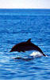

Les mers recouvrent 70% de la surface du globe. On compte mille aires marines protégées dans le monde, dont la surface totale représente à peine 2% des océans. L'expérience montre que les aires marines protégées ont un effet d'enrichissement à l'intérieur mais aussi à l'extérieur de leurs frontières.
La plupart des scientifiques et organismes internationaux impliquées dans la gestion et la conservation des océans considèrent qu'il faudrait protéger 10% à 15% du milieu marin mondial pour assurer sa conservation.
Parmi les mille zones marines protégées existantes, près de 80 % ne disposent pas des moyens humains et matériels pour mettre en œoeuvre de réelles mesures de gestion et de conservation (réglementations des activités, réduction des pollutions, surveillance, accueil et information du public, etc.).
|  | Les aires marines protégées ne doivent pas être perçues comme des "morceaux de nature sous cloche", mais comme des outils au service d'une gestion durable des océans et des espaces littoraux. Elles permettent de :
|
Les actions du WWF ont 2 objectifs principaux :
En France, Le WWF a lancé en octobre 1999 "Cap Ligures"', le plus vaste programme de protection des cétacés de Méditerranée dans le sanctuaire des Ligures, reconnu par la France, l'Italie et Monaco.
Alors que le bassin méditerranéen recèle un bon nombre d'espèces et écosystèmes remarquables, il accueille aussi 35% du trafic pétrolier mondial (880 000 tonnes d'hydrocarbures déversées chaque année) sans compter les 180 millions de touristes qui affluent chaque année dans les 20 pays riverains.
Le programme Cap Ligures entreprend des recherches scientifiques sur les cétacés, collabore avec les acteurs économiques du sanctuaire (pêcheurs, transporteurs maritimes…) pour identifier et réduire les facteurs de mortalité des mammifères marins.
Plus généralement, Cap Ligures contribue à la sensibilisation et l'éducation à la protection de l'environnement marin et du littoral méditerranéen.
D'autres actions vont être développées, visant à :